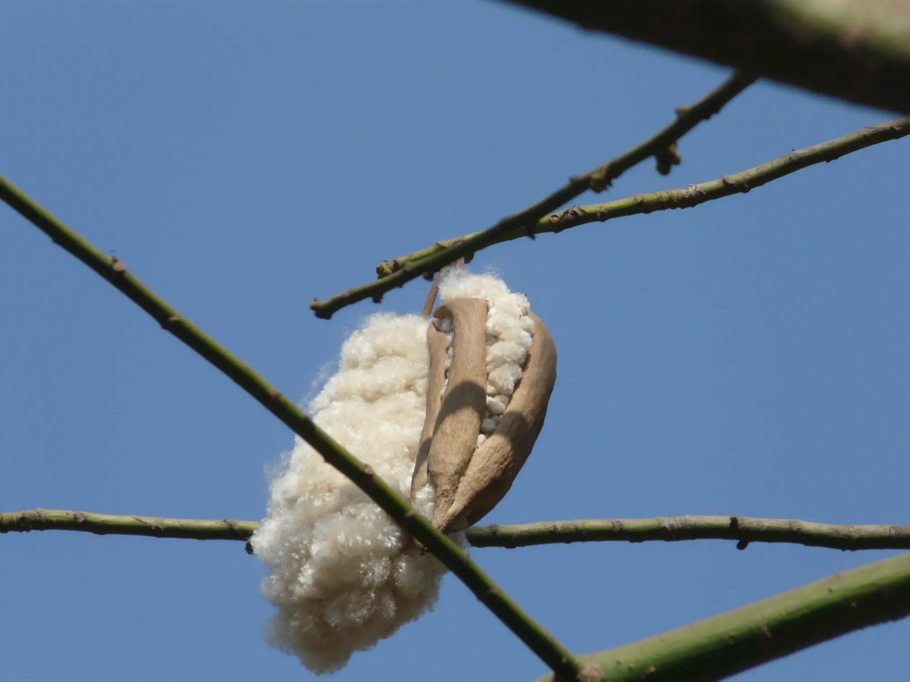
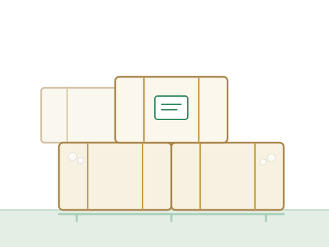
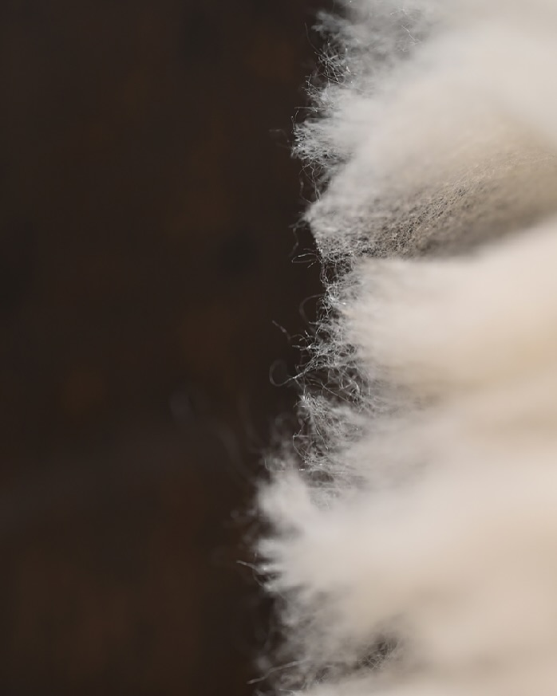

The bale
80 kg pressed bales, wrapped in cotton sheeting and numbered against the lot. Bulky for its weight: roughly 1.1 m³ compressed.
Hand-picked, de-seeded and cleaned on our own line. Baled or bagged, by the truckload or the container. Specification, quantities and terms are all on this page.
Picked by hand as the bolls split, yard-dried, then de-seeded, de-dusted and opened so it arrives lofted rather than matted. Nothing bought in is ever blended with it.
Ranges are seasonal averages across our contracted acreage. A hand-picked perennial crop varies between lots, so build tolerance into your specification.
| Fibre | Tree cotton, non-GM by identity |
| Form | Hand-picked, de-seeded and cleaned |
| Fibre length | 15–30 mm, season dependent |
| Bulk density | 22–30 kg/m³ uncompressed |
| Seed and shell | 1.5% maximum by weight |
| Dust and trash | 1.0% maximum by weight |
| Moisture | 10% maximum at despatch |
| Colour | Pale cream to light tan, undyed |
| Contamination | Hand-sorted; no jute, plastic or hair |

Pressed, numbered and warehoused until it is loaded. Everything below is per lot rather than pooled across the season.

80 kg pressed bales, wrapped in cotton sheeting and numbered against the lot. Bulky for its weight: roughly 1.1 m³ compressed.
It also goes out in 20 kg polywoven bags, which suit a toy or cushion workshop feeding a filling station by hand.
About 6.5 MT in a 20 ft container and 14 MT in a 40 ft high cube. This fibre cubes out long before it weighs out, so quote your freight by volume.
7–14 days in season, February to June. Out of season we ship from warehouse stock, usually within three weeks, subject to what is left of the crop.
Baled fill is kept dry, covered and away from ignition sources - loose tree cotton is readily flammable. We do not fumigate; stock moves within the season.
Quoted per MT against the season's farm-gate cost plus a published cleaning charge. Firm for 30 days.
Ex works at the mill, FOB or CIF to your named port. Domestic orders delivered by truck.
30% advance and balance against documents for new customers; irrevocable LC at sight or 30-day credit once a track record is established.
Third-party pre-shipment inspection welcome at your cost. Bales can be drawn at random.
Quality claims accepted within 30 days of arrival, assessed against the material we retain from every lot.
Forward contracts against the coming crop from July, which is how most of our repeat customers secure their volume.
Indicative typical values for the three fibres most often considered for the same job. Real figures vary by season - treat this as orientation, not a specification.
| Our tree cotton fill | Polyester fibrefill | Foam | |
|---|---|---|---|
| Origin | Natural, perennial crop | Extruded petrochemical | Blown petrochemical |
| Form supplied | Loose cleaned fibre, baled or bagged | Loose fibre or bonded batt | Cut sheet or crumb |
| Feel when filled | Dense, yielding, settles into shape | Springy and uniform | Firm, holds its own shape |
| Loft over time | Settles with use; re-carding restores it | Holds loft longest | Breaks down and crumbles |
| Breathability | High - air moves through the fill | Moderate | Low; traps heat |
| Repairable | Yes - open, re-card, top up | Rarely worth it | No |
| Can be spun | No - too short and irregular | Yes | No |
| Flammability | Readily flammable untreated | Melts; often treated | Requires treatment |
| End of life | Composts | Does not biodegrade | Does not biodegrade |
The honest summary: tree cotton trades the long, uniform loft of a synthetic for breathability, repairability and a fibre that goes back into the ground at the end of its life.
Tree cotton fills a volume; it does not build a structure. Specify it like foam or polyester fibrefill and you get a disappointing product and an argument on the filling line.

Our contracted groves sit in a traditional tree cotton belt - 1,180 acres, rain-fed and farmed by 640 smallholder families.
It is dusty and it is flammable. Opened fibre throws dust, and untreated fibre catches light readily. Filling stations need extraction and enclosure; bales need to be stored away from ignition sources. Normal for a natural fill - but plan for it before the first pallet lands.
Your finished product carries its own obligations. Flammability, labelling and - for toys and nursery goods - chemical safety rules apply to the article you sell, not to our bale. We supply the fibre-side documentation those tests need. Be wary of a supplier who claims more.
Seed and shell under 1.5%, moisture under 10%, pressed into numbered bales and kept dry and covered until it loads.
Beating the fibre hard is the fast way to separate it from seed - and the way to a bale of broken fibre and shell grit. Our lines run gently, then de-dust and open the fibre.
| Stage | What we run | Per season |
|---|---|---|
| Contracted grove | 640 smallholder families | 1,180 acres |
| Hand picking | 3–5 selective passes per tree | ≈ 3,600 MT as picked |
| Intake | Weighbridge and moisture meter | Lot by lot, not pooled |
| Drying & cleaning | Open yard drying, single cleaning point | - |
| De-seeding & cleaning | 4 cleaning lines, two shifts | ≈ 900 MT cleaned fill |
| Pressing | 1 bale press | ≈ 11,250 bales at 80 kg |
| Warehouse | Covered, ventilated, palletised | 3,000 bale capacity |
Cleaning outturn runs at about 25% - the rest is seed and shell, which goes back to the farms and the compost yard rather than into a trade we are not in.
Weighed and moisture-checked as it arrives. Lots are stacked separately, never tipped into a common heap.
Yard drying to bring moisture into range, then a single cleaning point. Hand-picked cotton arrives clean, so we take out less and keep more of the fibre.
Two shifts through the season, with outturn recorded lot by lot.
Pressed into 80 kg bales, each numbered against the lot it came from.
Cleaned down between lots. The line is emptied and swept between lots. It costs us throughput, and it is the only way one lot arrives like the last one.
Say what you are making and how much you need, and we will come back with a price, a lead time, a and Incoterms, in writing.